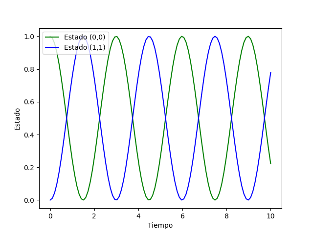

Ejemplo de uso
Para llevar a cabo la implementación del método RK4 primero debemos importar algunas bibliotecas necesarias de Python:
import numpy as np
import matplotlib.pyplot as plt
Ahora, podemos llevar a cabo distintos pasos con un ejemplo de implementación:
Asumamos que queremos estudiar la evolución temporal de un estado \(\mathbf{y}(t)\). Este estado será representado mediante una matriz 2x2 que corresponde a algún operador lineal. La función que genera la dinámica del problema es: $$ f(t, \mathbf{y}) = -{\rm{i}} [\mathbf{O}, \mathbf{y}(t)], $$ donde \(\mathbf{O}\) es otro operador lineal, \({\rm{i}}\) es la constante compleja y \([A, B] = AB - BA\) es un operación de conmutación. Note que la función \(f(t, \mathbf{y})\) no depende explícitamente de la variable temporal.
En Python, la constante compleja se denota mediante:
iConst = 1.0j
La dinámica del problema depende intrínsicamente del operador \(\mathbf{O}\). Podemos escoger el siguiente operador:
oOper = np.array([[0, 1], [1, 0]])
Dicho operador puede tener distintos significados físicos dependiendo del problema dinámico en cuestión. Puede representar un mapa algebraico, el generador dinámico de un sistema caótico, un Hamiltoniano, etc.
Lo siguiente es difinir un estado inicial. De igual forma, dicho estado puede representar cantidades físicas de un sistema. Consideremos:
yInit = np.array([[1, 0], [0, 0]])
Note que el operador \(\mathbf{O}\) no es diagonal, por lo cual esperamos que conforme avanza el tiempo, dicho operador modifica el estado \(\mathbf{y}(t)\).
Implementemos la función \(f(t, \mathbf{y})\) en Python con la función np.dot.
def dyn_generator(oper, state):
return -1.0j*(np.dot(oper, state)-np.dot(state, oper))
Ahora debemos implementar el método RK4, la función que realiza la operación dinámica en Python:
def rk4(func, oper, state, h):
k_1 = h*func(oper, state)
k_2 = h*func(oper + h/2, state + k_1/2)
k_3 = h*func(oper + h/2, state + k_2/2)
k_4 = h*func(oper + h, state + k_3)
return state + (1/6)*(k_1+2*k_2+2*k_3+k_4)
Con estas funciones a nuestra disposición, podemos evaluar la dinámica temporal en una grilla temporal unidimensional, utilizando la función np.linspace para crear un arreglo de valores temporales.
times = np.linspace(0.0, 10.0, num = 100, endpoint = True).astype(float)
Luego, el valor de \(h\) sería:
h = times[1] - times[0]
Ahora creamos una rutina para realizar la evolución temporal. Primero, necesitamos una copia del operador que representa el estado inicial. Esto se puede hacer con el método copy() del módulo numpy:
yCopy = yInit.copy()
Y, finalmente, llamamos de manera iterativa la rutina rk4(), calculando el operador del estado del sistema \(\mathbf{y}(t)\) a través del tiempo. A travéz del tiempo, vamos a guardar la entrada \((0, 0)\) y \((1, 1)\) de la matriz \(\mathbf{y}(t)\).
Para esto, vamos a inicializar dos arreglos que van a contener los valores con valores iniciales cero. Utilizamos el mismo tamaño del arreglo que contiene la variable independiente temporal:
stateQuant00 = np.zeros(times.size)
stateQuant11 = np.zeros(times.size)
Rutina principal: esta rutina realiza la evolución temporal.
for tt in range(times.size):
# Guardamos el valor de las entradas (0,0) y (1,1) en los arreglos que definimos
stateQuant00[tt] = yInit[0,0].real
stateQuant11[tt] = yInit[1,1].real
# Invocamos rk4 operando sobre yInit
# y devolvemos el resultado a un nuevo yN
yN = rk4(dyn_generator, oOper, yInit, h)
# Ahora asignamos yN a yInit
# De esta manera, en la siguiente iteración, el operador de esta iteración se convierte en el inicial
# de la siguiente iteración
yInit = yN
Ejemplo de gráfico para los resultados
Utilizamos matplotlib
plt.plot(times, stateQuant00, label='Estado (0,0)', color='green')
plt.plot(times, stateQuant11, label='Estado (1,1)', color='blue')
plt.xlabel('Tiempo')
plt.ylabel('Estado')
plt.legend(loc='upper left')
plt.show()
